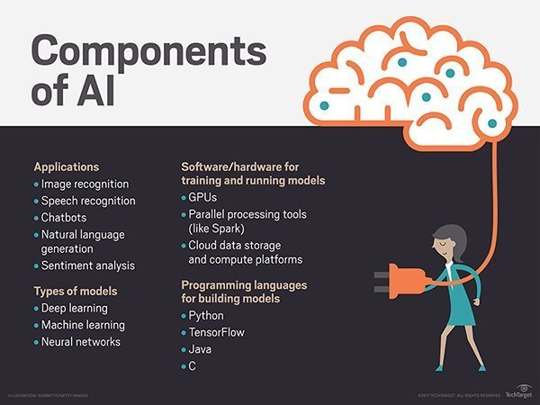

- HOME:
ARTIFICIAL INTELLEGENCE
AI (artificial intelligence)
Artificial intelligence (AI) is the simulation of human intelligence processes by machines, especially computer systems.
These processes include learning (the acquisition of information and rules for using the information),
reasoning (using rules to reach approximate or definite conclusions) and self-correction.Particular applications
AI include expert systems,speech recognition and machine vision.
AI can be categorized as either weak or strong. Weak AI, also known as narrow AI, is an AI system
that is designed and trained for a particular task. Virtual personal assistants, such as Apple's
Siri, are a form of weak AI. Strong AI, also known as artificial general intelligence, is an AI s
ystem with generalized human cognitive abilities. When presented with an unfamiliar task, a strong
AI system is able to find a solution without human intervent

Types of artificial intelligence:
Arend Hintze, an assistant professor of integrative biology and computer science and engineering
at Michigan State University, categorizes AI into four types, from the kind of AI systems that
exist today to sentient systems, which do not yet exist. His categories are as follows:
Type 1:
Reactive machines. An example is Deep Blue, the IBM chess program that beat
Garry Kasparov in the 1990s. Deep Blue can identify pieces on the chess board
and make predictions, but it has no memory and cannot use past experiences to
inform future ones. It analyzes possible moves -- its own and its opponent --
and chooses the most strategic move. Deep Blue and Google's AlphaGO were
designed for narrow purposes and cannot easily be applied to another situation.

Type 2:
Limited memory. These AI systems can use past experiences to inform future .
decisions Some of the decision-making functions in self-driving cars are designed
this way.Observations inform actions happening in the not-so-distant future, such
as a carchanging lanes. These observations are not stored permanently.
Type 3:
Theory of mind. This psychology term refers to the understanding that others
have their own beliefs, desires and intentions that impact the decisions they
make. This kind of AI does not yet exist.
Type 4:
Self-awareness. In this category, AI systems have a sense of self, have
consciousness. Machines with self-awareness understand their current state
and can use the information to infer what others are feeling. This type of
AI does not yet exist .
APPLICATIONS OF AI:
HEALTH CARE
In healthcare, artificial intelligence has already proved to be a
game-changer,improving every part of the industry virtually.
AI-enabled workflow assistants are aiding doctors free up their schedules
, reducing time and cost by streamlining processes and opening up new avenues
for the industry. In addition, AI-powered technology helps pathologists in analyzing
tissue samples and thus, in turn, making more accurate diagnosis
FINANCE

Collaboration of finance industry and artificial intelligence is a perfect match.
All these are areas in which AI-enabled systems excel. Because of the accuracy and efficiency
of artificial intelligence, finance sector is quickly implementing machine learning, algorithmic trading,
adaptive intelligence, chatbots, automation etc into an array of processes.
Now, there’re automated advisors powered by AI, who’re capable of predicting the best portfolio
or stock based on preferences by scanning the market data. Actionable reports based on relevant financial
data is also being generated by scanning millions of key data points, thus saving analysts numerous hours
of work.
SMART CARS AND DRONES
When it comes to AI applications, you can hardly get a more prominent and better demonstration
of the technology than what smart cars, as well as drone manufacturers,
are accomplishing with it.
Autonomous vehicles are prime examples of how artificial intelligence is impacting the
automotive industry. A large segment of autonomous vehicles are connected and thus, able
to share the learning with each other. This percentage is set to increase rapidly in the future.
With autonomous vehicles running on the roads and autonomous drones delivering the shipments, a significant
amount of transportation and service related issues can be resolved faster and more effectively.
- ABOUT ME
- CONTACT ME